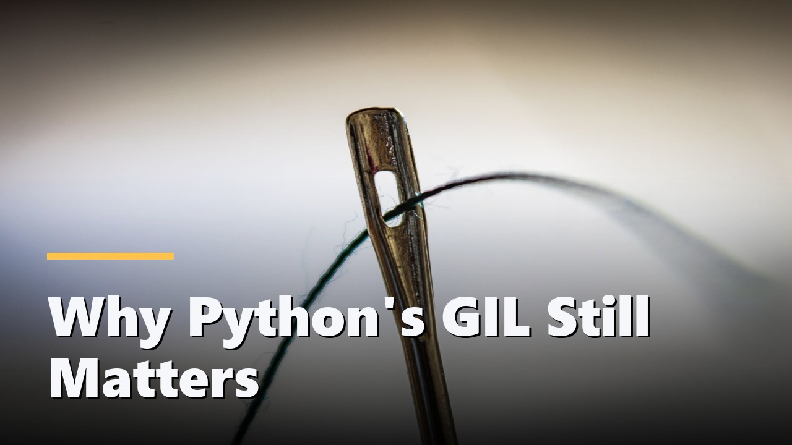

Not published yet
Infrastructure
Why Your Backup Has Never Been Tested
The difference between a backup job reporting success and a file anyone has read back.
0:44 · 4 scenes
A markdown script goes in. A narrated, captioned, delivery-ready video comes out, with an .srt, a thumbnail, and a draft title, description and chapters beside it. The captions are exact because nothing ever transcribes anything.
Written as markdown, spoken by a neural voice, cut against the speech timings, and scored under the narration. Nothing here was edited by hand afterwards.
The difference between a backup job reporting success and a file anyone has read back.

Eight cores, one interpreter lock, and why threads still help for the work that is waiting rather than computing.
Every index is a write tax. The read you sped up is paid for on every insert that follows.
How a sentence becomes objects and predicates, and why a database query is the same shape as a logical claim.
Most of this project is ordinary. These four are the parts that make the output hold together, and each one was arrived at by measuring something rather than by picking the obvious approach.
The usual approach synthesises speech, then runs Whisper over that speech to find out where the words landed. Edge's TTS already reports a word-boundary event for every word it speaks, so the timings come from the engine that made the audio. Nothing to transcribe, no model to download, and no error to accumulate.
A single unbroken eight-second take is what makes generated video look generated. Each scene is split into shots at the sentence boundaries those same word events report, so the picture changes exactly where the speaker lands a full stop.
Stock search ranks by popularity, so "calendar pages turning" returns a book. The preview stills of the top candidates go to Gemini vision alongside the narration line and are reordered by what they actually show. Clips it marks as the wrong subject are never used, even if that means holding one correct shot for longer.
Pexels and Pixabay require the creator named and linked. The build records every clip's creator into the credits and the description, and a pre-publish check compares what the credits say against what is actually on the thumbnail. That check exists because the two disagreed once, silently.
script 4 scenes, ~35s estimated voice en-US-AndrewNeural at +8% visuals scene 0 2 shots 2.7+3.6 server room racks rerank: picked #4 over the top result rerank: rejected 5 of 8 as the wrong subject render 44.6s of picture across 10 shots, mixing and encoding check delivery is consistent
The interesting failures in a media pipeline are not logic errors. They are a path an encoder cannot open, a filter a build of ffmpeg does not have, and a credit that silently stopped matching the image beside it.
Every platform earns its place. Windows is the only runner that hands ffmpeg a drive letter, which is the entire reason the path escaping exists. macOS found a build of ffmpeg with no subtitle filter at all, whose error message reads exactly like a quoting fault. Without a key it still renders narrated, captioned video over generated cards, so nothing about the pipeline depends on a model being reachable.